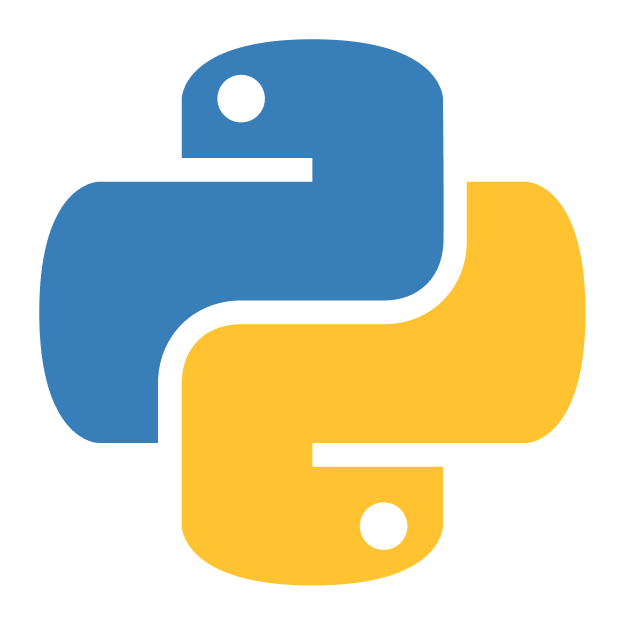
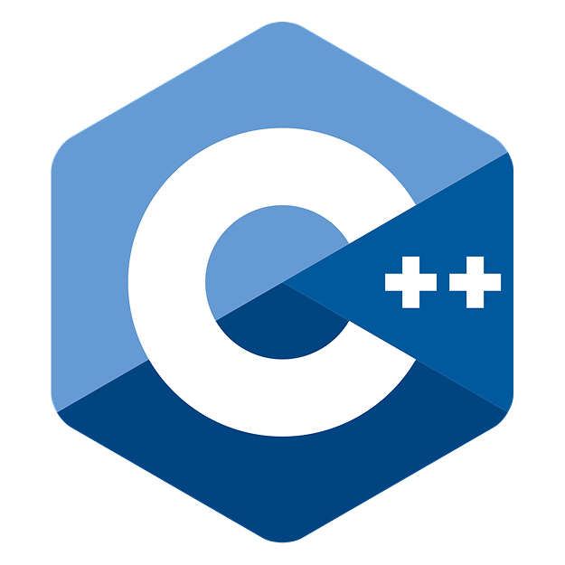
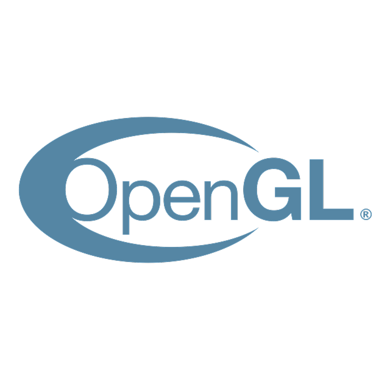
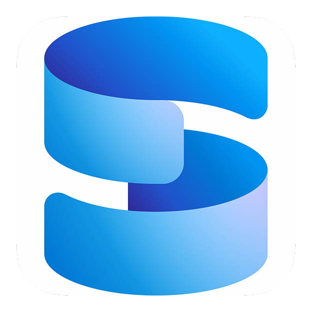
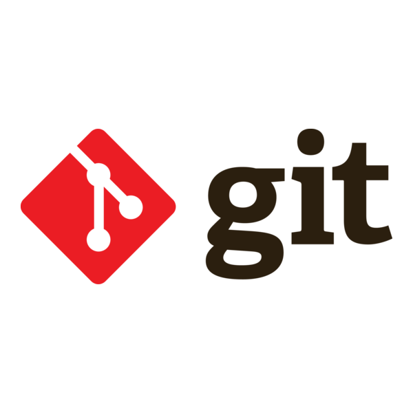
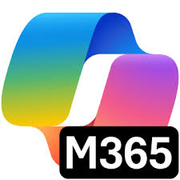
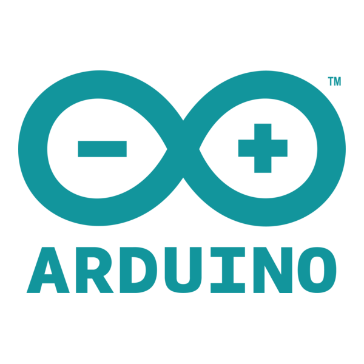

O mnie
Jestem pasjonatem technologii z praktycznym doświadczeniem w
branży IT i silnym zapleczem technicznym. Studiuję informatykę na
Uniwersytecie im. Adama Mickiewicza w Poznaniu, gdzie rozwijam
swoje kompetencje programistyczne oraz znajomość nowoczesnych
technologii. W Fundacji MEETin pełniłem funkcję Specjalisty ds. IT
i odpowiadałem za prowadzenie projektów zespołowych oraz
utrzymanie systemów informatycznych. Pracując z zespołem, zdobyłem
umiejętności efektywnej współpracy i organizacji pracy.
Posiadam doświadczenie w programowaniu (Python, C++, React i React
Native), obsłudze baz danych (SQL Server i Firebase) oraz pracy z
chmurą (Google Cloud). Swobodnie poruszam się w środowiskach
Windows i Linux oraz dobrze znam narzędzia do kontroli wersji, co
pozwala mi efektywnie realizować zadania i szybko dostosowywać się
do nowych zadań. Jestem osobą zorganizowaną, skrupulatną i
nastawioną na analityczne podejście do rozwiązywania problemów,
samodzielność i szybkie przyswajanie nowych technologii.
Dążę do ciągłego rozwoju w obszarze IT, angażując się w projekty
wymagające innowacyjności i elastyczności.
Wyróżnione projekty
Wykorzystywane w projektach technologie
-  Python
-  C++
- React / React Native
- PyTorch
-  OpenGL
-
 Spring Boot
Spring Boot
-  Microsoft SQL Server
-
 Firebase
Firebase
-  Git / GitHub
-  Microsoft 365 / Office
-
 Jupyter Notebook
Jupyter Notebook
- Ubuntu
- PowerShell
-
 Google Cloud
Google Cloud
-  Arduino